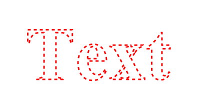

AddPathText()
语法
AddPathText(Text$)概要
Add the outline of the characters in the given text to the current cursor position in the vector drawing path. The current position can be set with MovePathCursor(). After the call to this function the cursor is moved to the end of the added text.
The DrawVectorText() function should be preferred if possible. See the below remarks for details.
参数
Text$ Specifies the text (single-line) to add to the drawing path.
返回值
无.
备注
Converting text to a path is an expensive operation and may result in a loss of text quality and even a slightly different text form (depending on the font) as compared to directly drawing the text to the output with DrawVectorText(). The DrawVectorText() function is more efficient and can make use of methods such as sub-pixel rendering to improve the text quality. Therefore, the AddPathText() function should only be used if the text is explicitly needed as a path and not for simple text drawing.
示例
If OpenWindow(0, 0, 0, 400, 200, "VectorDrawing", #PB_Window_SystemMenu | #PB_Window_ScreenCentered) CanvasGadget(0, 0, 0, 400, 200) LoadFont(0, "Times New Roman", 20, #PB_Font_Bold) If StartVectorDrawing(CanvasVectorOutput(0)) VectorFont(FontID(0), 150) MovePathCursor(50, 25) AddPathText("Text") VectorSourceColor(RGBA(255, 0, 0, 255)) DashPath(3, 6) StopVectorDrawing() EndIf Repeat Event = WaitWindowEvent() Until Event = #PB_Event_CloseWindow EndIf
参阅
DrawVectorText(), DrawVectorParagraph(), VectorTextWidth(), VectorTextHeight()
已支持操作系统
所有